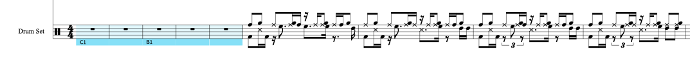

Utilizar Groove Agent SE5
En un modo básico de edición de set de percusión, recomiendo utilizar el instrumento la librería de percusión propia de Dorico Grove Agent.
Crear Patrones
Se pueden crear Grooves desde el popover: Crear región de disparos Midi. Se visualizará una región con una marca bajo el sistema con el groove seleccionado. Por ejemplo C1, B1, etc...
Para visualizar la escritura debemos arrastrar el groove a la pista de percusión activa dentro del modo Reproducción.
